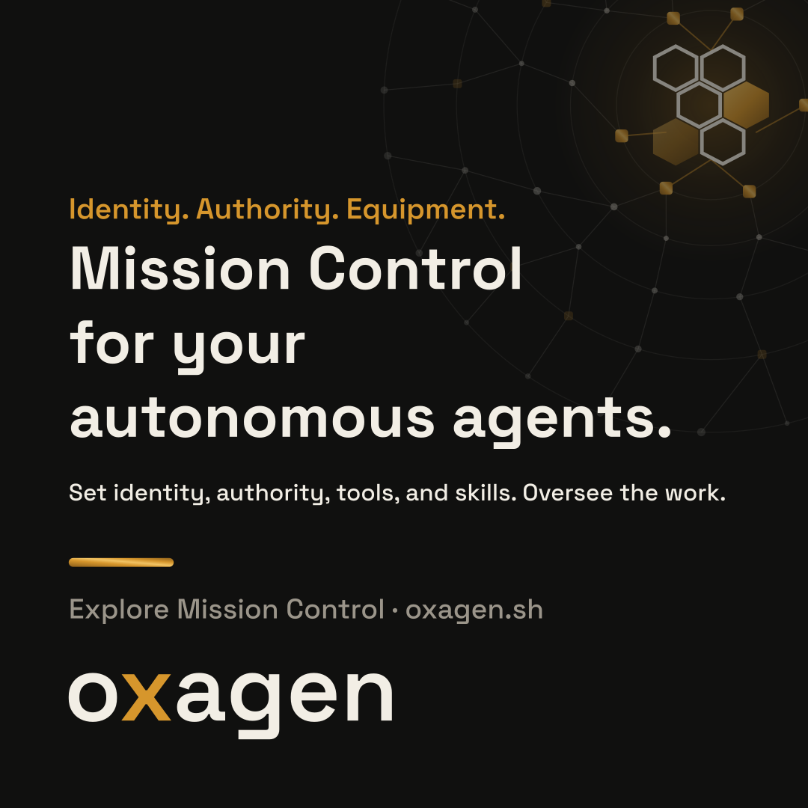
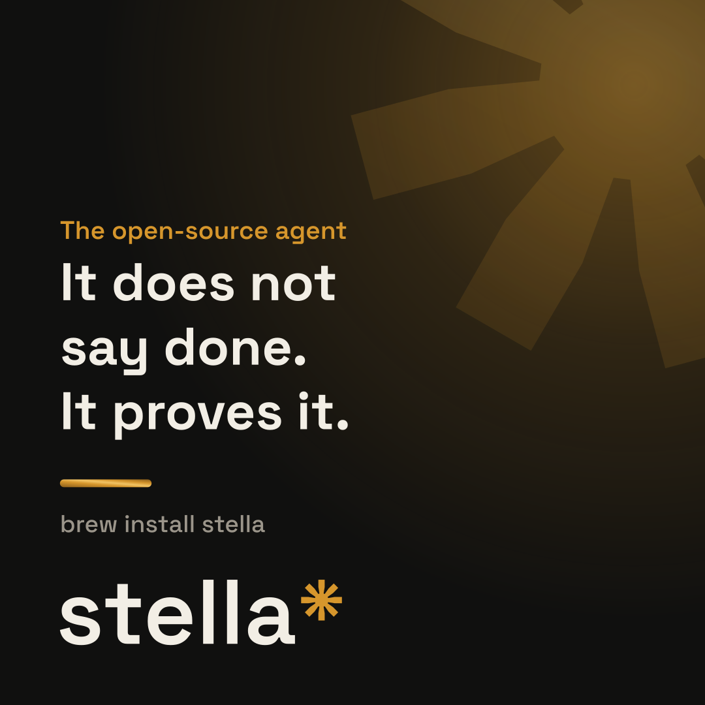
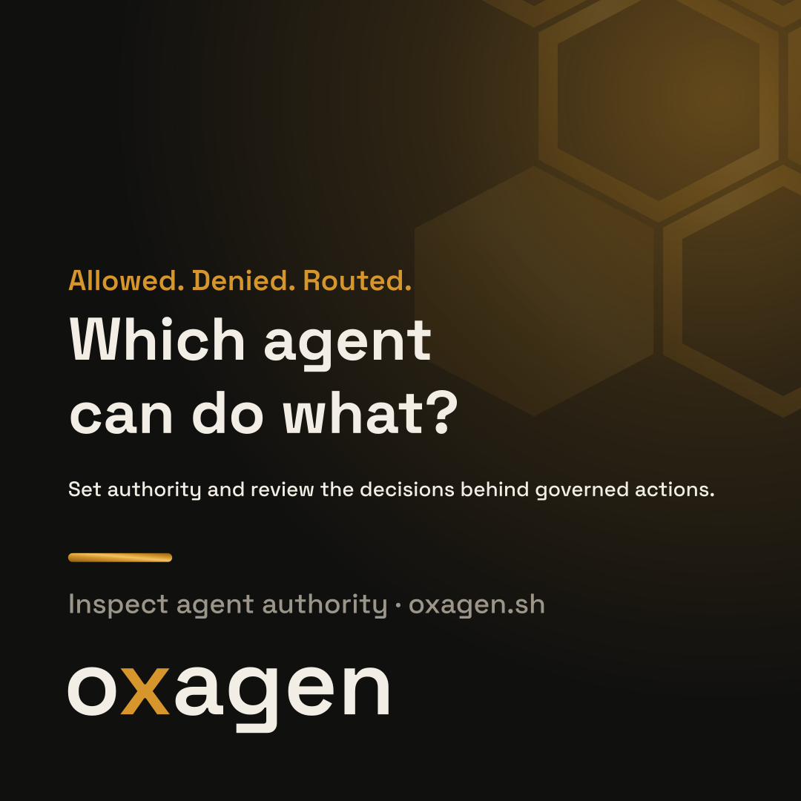
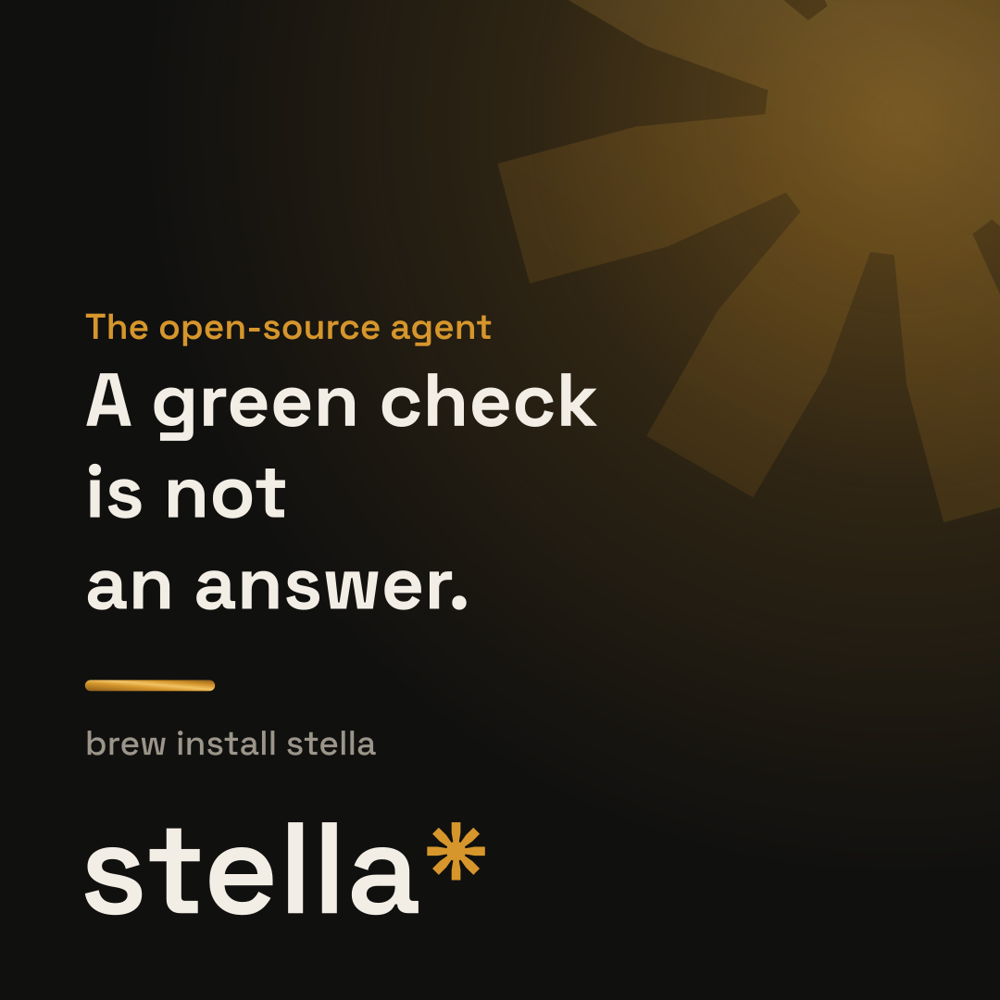
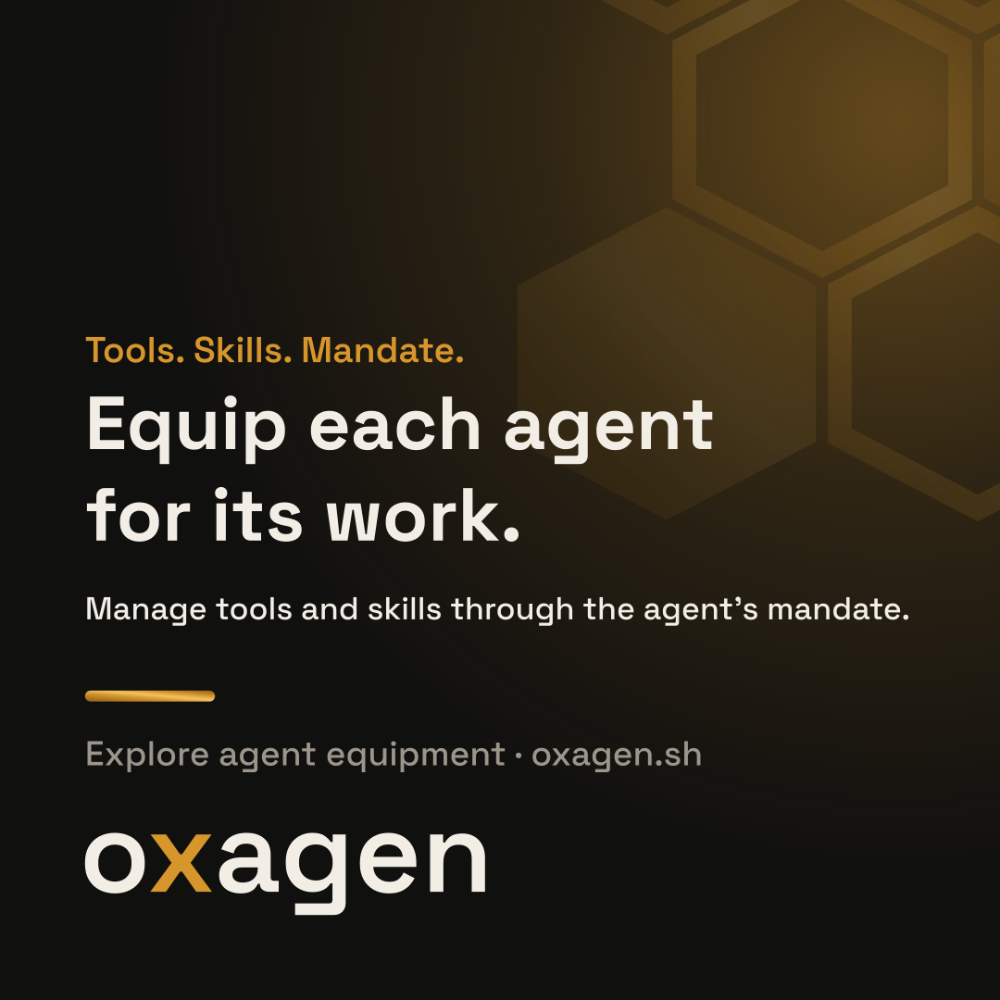
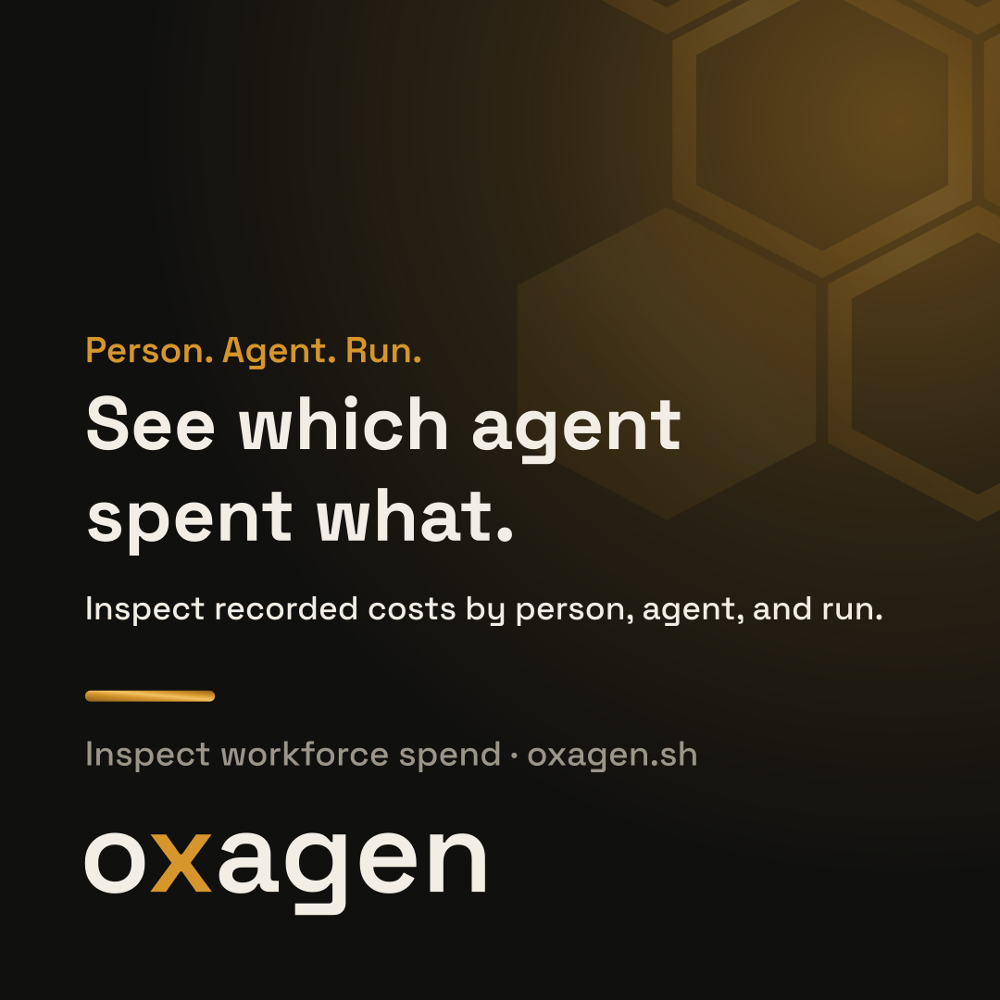
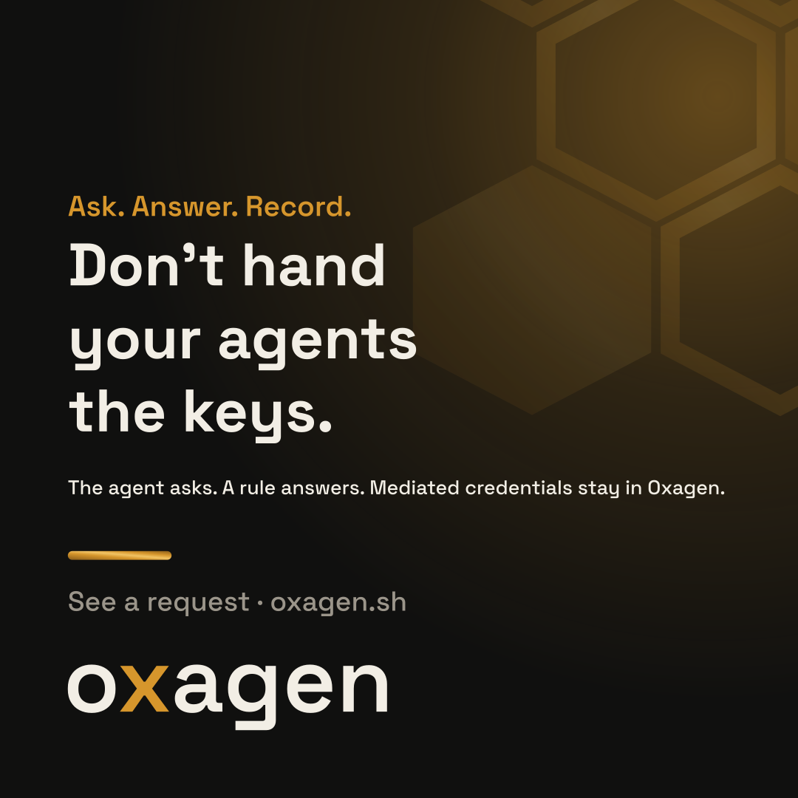

The control plane for your agent workforce
Mission Control for your autonomous agents.
Give each agent an identity. Set its authority, budget, tools, and skills. Define completion when the work has an endpoint, and oversee ongoing work through its requests, activity, and spend. Oxagen keeps the record of the actions it governs.
Every line on this page is generated from the registry in messages/. To change one, edit its YAML file and run python3 build/messages.py. The registry holds 160 entries: 132 approved, 3 candidate, and 25 retired. Of the live ones, 112 ship at launch and 23 wait for a capability.
The claim
One mandate, four clauses
Identity systems say who the agent is. Gateways say which tools it can call. Billing says what it consumed. Prompt repositories say what it was told. Oxagen binds those into one mandate per agent, checks it on the actions routed through Oxagen, and keeps a record another person can read.
A mandate is the one object an agent works under: its access, its budget and rules, its equipment, and the record Oxagen keeps of its governed work.
Set an agent's authority, budget, tools, and skills in its mandate. Review the record of the work Oxagen governs.
| Clause | Read first by | What it covers |
|---|---|---|
| Access | security | Which identity the agent acts as, which systems it may request, which data and knowledge scope it may read, and which actions it may request. |
| Budget and rules | finance | What the agent may spend, under which commercial terms, and the rules it must obey, such as approval thresholds and allowed vendors. |
| Equipment | engineering | The knowledge the agent is handed at the start of a job, the skills and tools it may use, and the steering it runs under. |
| Record | security, finance, engineering | What the run read, what it changed, what it cost, and which checks it passed. The platform keeps it. |
A security lead reads access first. A finance lead reads budget first. An engineering lead reads equipment first, then the record. One person may own all four. See the rules.
Lines
Approved messages, with release status and scope
The lead lines, then the headlines that open a page or a section. A held line waits for the capability named on its badge. Open any entry for its launch evidence and owner.
| Line | Use it for | Scope | Status |
|---|---|---|---|
| The control plane for your agent workforce | site hero | approvedlaunchhero-eyebrow | |
| Mission Control for your autonomous agents. | site hero, ads, social, web manifest | Oxagen keeps the record of the actions it governs. | approvedlaunchhero-headline |
| Stella is an agent. Oxagen is Mission Control for the workforce. | stella readme, product page | candidateheld until stella-integrationstella-relationship | |
| It does the work and proves it finished. | social, web manifest | approvedlaunchstellastella-tagline | |
| Don't hand your agents the keys. | site access section, security page, security email, ads | For mediated connections. | approvedlaunchaccess-keys |
| Identity, authority, and a record you can inspect. | security page | approvedlaunchsecurity-headline | |
| See which agent spent what, and on whose behalf. | site finance, finance email, ads | The costs shown are the costs Oxagen recorded. | approvedlaunchfinance-headline |
| Give agents the business context their work requires. | site knowledge | Within the agent's permitted knowledge scope. | approvedlaunchknowledge-headline |
| The agent doesn't get to decide it's done. | product page, feature cards | For bounded tasks with a definition of done. | approvedheld until doddod-not-your-call |
| Define done before the work starts. | product page, feature cards | For bounded tasks. | approvedheld until doddod-define-before |
Mission Control is the product. The agent control plane is the category. The naming rule has the rest.
The pitch
One sentence, then the paragraph
Oxagen is Mission Control for an autonomous agent workforce: assign identities, set authority, equip agents with tools and skills, and oversee their work through a shared control plane.
Oxagen is Mission Control for the operators managing an autonomous agent workforce. Register agents with their own identities, assign roles and authority, and choose the tools, skills, and knowledge they can use. Set budgets, direct live work, and review requests that need your judgment. For work with a finish line, define what done means and how it will be checked. For ongoing responsibilities, set the operating limits and review the record. Oxagen brings the authority, activity, cost, and evidence for governed work together in one control plane.
Explore Mission ControlYour operators decide what each agent is responsible for, what it may do, and what it needs to work. Oxagen gives those decisions a home: an agent identity, a mandate for authority and budget, assigned tools and skills, and a record of governed activity. For bounded work, define completion before it starts. For ongoing work, manage the agent's authority, requests, and spend as it operates.
Sections
The product page, in the operator's order
Authority, equipment, work, operations, and the audit record. Completion is a control for work with an endpoint.
Set the authority behind each action.
Give each agent its own identity in your identity and access management system. Set which actions it may request and which resources it may reach. For actions handled through Oxagen, rules allow the request, deny it, or route it to a person. The record connects the decision to the agent and the person responsible for its work.
For actions handled through Oxagen.
Give each agent the tools and skills its work requires.
Manage the tools and skills available to your workforce, then assign them through each agent's mandate. Pair the equipment with the authority to use it and the business context the agent is permitted to read.
Define completion when the work has an endpoint.
For a bounded task, set the checks and human decisions that determine completion before the agent starts. Oxagen locks those criteria into the run and records the results. For an ongoing responsibility, set the authority, budget, and review points that keep the work accountable over time.
A passing verdict means the specified checks held. Your team decides whether those checks are sufficient for the task.
Manage the workforce from Mission Control.
See the agents enrolled in Oxagen, the mandates they work under, their open requests, and their recorded activity and spend. Answer an approval request, change an assignment, or adjust a budget from the operator's view. Agents run in their supported environments, and Oxagen is the control plane that governs their work.
Use the hold and stop controls supported by each integration.
Follow the action back to its authority.
Review which agent requested an action, on whose behalf, which rule answered, and who approved it when a person was required. Inspect the recorded result and cost alongside that decision. For runs with completion checks, export the record so another person can recompute the recorded verdict without an Oxagen account or network connection.
An exported verdict does not establish that every requirement was captured or that every action was correct.
Entry points
Security, finance, and knowledge each get a door
Each opens onto the same control plane. The finance door shows recorded cost. The knowledge door keeps context inside the agent's permitted scope.
Identity, authority, and a record you can inspect.
Review how agent identities map to your access controls, how Oxagen handles connection credentials, and what each governed action records. Inspect the supported deployment and integration boundaries before granting authority.
Inspect an agent's authoritySee which agent spent what, and on whose behalf.
Review recorded costs by person, agent, and run. Inspect the usage and rate behind a charge, then use that record to decide where to change a budget.
Inspect workforce spendThe costs shown are the costs Oxagen recorded.
Give agents the business context their work requires.
Put approved business context within the agent's permitted knowledge scope. Define which sources it can use and review those sources as the business changes.
Explore the context behind a runWithin the agent's permitted knowledge scope.
Access
Don't hand your agents the keys.
The agent asks. A rule you wrote answers. For mediated connections, the credential stays in Oxagen.
An agent under Oxagen has its own identity and a mandate. When a task needs a system, a scope, or an action the mandate does not already cover, the agent asks for it at the moment of use. A rule allows the request, denies it, or routes it to a person, and the record keeps the answer. For mediated connections, Oxagen uses the connection credential on the agent's behalf, and the agent does not receive it.
The usual model hands the agent a token with everything it might ever need and hopes it uses only some of it. Oxagen's model is a request. The agent holds its own identity and a mandate. When a task needs a system, a scope, or an action the mandate does not already cover, the agent asks for it at the moment of use.
Writing about access
- The agent asks. Say the agent can request Slack, or that Slack is in the agent's mandate. Do not write that the agent has access to Slack.
- The rule decides. Name the three answers when there is room: allowed, denied, routed to a person.
- The record keeps the answer. Each request routed through Oxagen is a row with the rule that answered it and, when routed, the name of the person who did.
- For mediated connections, the credential stays in Oxagen. Oxagen uses the connection credential on the agent's behalf and the agent does not receive it. The agent's own identity and authentication are separate from that downstream credential. Say where the credential is held and what the record shows, and make no promise about what cannot leak.
- No fear. Tell the reader what the request looks like and who answers it. Do not assume what they have already done with a token.
Each agent has its own identity. For mediated connections, Oxagen uses the connection credential on the agent's behalf without giving that credential to the agent. The agent's own identity and authentication are separate from the downstream credential held for a connection.
Don't hand your agents the keys.
An agent under Oxagen has its own identity and a mandate. For mediated connections, it does not receive a token to GitHub or a password to the database. When a task needs one of those systems, the agent asks. The request carries who started the task, which agent is asking, which tool it wants, and which data it would reach.
A rule you wrote answers.
The team that owns the system writes the rule. Reads of the public repo: allowed. A push to main: denied. A push to a release branch: routed to the release owner, who sees the request with the diff beside it and answers from the Access page. Allowed and denied requests settle inside the same call. Routed requests wait for the person, and the run waits with them.
For mediated connections, the credential stays in Oxagen.
Oxagen holds the credential and makes the connection on the agent's behalf when a rule allows the request. The agent does not receive the credential. The record shows each use: the request, the rule that answered it, and the person who signed it.
Proof points
Stated so they survive a rebuttal
Released at launch
One object, checked at the governed call. Identity, knowledge scope, permitted action, commercial terms, outcome, and audit record are one typed contract, checked when the agent makes a governed call, not reconstructed after the incident. For actions routed through Oxagen.
Cost is a recorded row. Each governed action carries its recorded cost, attributed to the person, the agent, and the run, with measured, reported, and estimated costs marked. The Spend page and the run record read the same rows.
Three answers, one rule. A rule names a capability, a condition, and one effect: allow, deny, or route to a person. For governed calls, Oxagen checks it before the handler runs, so a denied action does not reach the code that would have done it. For governed calls.
Your model keys, your graph. Bring your own model keys and your own graph endpoint. Hosting is billed at cost.
Whoever built the agent. Claude Code, the Agent SDK, or a custom loop, with a supported wrapper beside it. The wrapper records and gates governed calls from beside the agent. Oxagen does not run it. With a supported wrapper.
Held for their gate
Pre-committed, not reconstructed. The dod is locked before the agent's first tool call, and its position in the run's chain shows it. For bounded tasks with a dod.
Two halves, on purpose. The dod is visible to the agent, so drift shows where it happens. The witness is hidden, so a change that only satisfies the visible checks does not earn a flip. For bounded tasks with a dod and a witness.
No model in the verdict. decide() is a pure function of the run's frames. A model can draft the checks, and it cannot choose the verdict.
Another person can recompute the verdict. oxagen dod verify runs on an export with no account and no network, and returns the verdict the recorded checks produce. The verdict covers the specified checks.
The meter follows the proof. Charge for proven runs. Report runs and governed actions as secondary meters. Proven means a witness flipped.
Describe the category behavior instead: tools that record, a token with everything the agent might ever need, scores written after the fact, a second model grading the first. The reader supplies the names.
Buyers
What each reader should be able to say
These statements are hypothetical. They describe the outcome a reader should reach, and no person or company said them.
Hypothetical, not a testimonial
Operator
I can see what each agent may do, what it needs, and what it costs, and change it in one place.
Hypothetical, not a testimonial
Security lead
Agents ask for what the task needs, and I can read which rule answered each request routed through Oxagen.
Hypothetical, not a testimonial
Finance lead
I can say which agent spent what, on whose behalf, under which rule.
Hypothetical, not a testimonial
Engineering lead
For bounded tasks, I read the check results before I read the diff.
Show an agent's identity and the mandate it works under. Let it request a push to a protected branch and get denied, with the rule id. Let it request a push to a release branch and watch the request route to a person, answer it from the Access page, and see the run resume. Open the run and show the request beside the tool call with its cost. Then show an ongoing agent with its budget and open requests, and a bounded task with its completion checks.
Feature cards
Title, short, long, and action for each feature
Cards marked held stay off the site until their gate ships. The definition of done cards belong to the bounded-task group only, never a lead. Jump to Mission Control, Definition of done, Witness, or Identity and equipment.
Mission Control
Card 1
Your agents. Their work. One place to act.
See what each enrolled agent is doing, what it needs, and what it costs. Answer, steer, fund, or stop it from Mission Control.
Long copy
An agent waiting for approval. Another nearing its budget. A third working from the wrong assumption. Mission Control brings their runs, requests, mandates, and spend into one view. Open the run, read what happened, and take the next action with the record beside you.
Open the Fleet page
Agents enrolled in Oxagen, with the controls each integration supports.
Card 2
Set the terms your agents work under.
Set access, budget, rules, tools, and steering in one mandate, whichever team owns each part.
Long copy
A mandate is the one object an agent works under. It names what the agent may request, what it may spend, and which tools and instructions it may use. Oxagen checks those terms on governed calls and records the decision, so the people setting the limits can see how they were applied.
Explore a mandate
Checked on governed calls.
Card 3
Answer each request when the agent makes it.
The agent requests an action. Your rule allows it, denies it, or routes it to a person. For mediated connections, the credential stays in Oxagen.
Long copy
A read from GitHub and a push to a protected branch deserve different answers. For actions routed through Oxagen, each request meets the rules your team wrote. When an allowed request uses a mediated connection, Oxagen uses the connection credential on the agent's behalf, and the agent does not receive it. You can read what the agent requested, which rule answered, and who signed an approval.
Follow an access request
For actions routed through Oxagen, and for mediated connections.
Card 4
Put the decision in the right hands.
Route the requests that need judgment to the people responsible, with the action and its context ready to review.
Long copy
Your rules decide when a person needs to look. Oxagen pauses the governed request and shows the reviewer which agent asked, what it wants to do, and the authority it would use. The run resumes with the answer recorded. Routine requests can proceed under the rules you already set.
See an approval
Card 5
Change course while the work is happening.
Add a constraint, correct an assumption, or redirect a live run. See when your instruction reaches the agent.
Long copy
Open a run and send the correction where it matters. Deliver steering after the current step, at the next turn, or by interrupting where the connection supports it. Oxagen records the instruction and its delivery status, so you can tell whether it is still waiting or has entered the agent's context.
Steer a live run
Interrupts where the connection supports them.
Card 6
Stop the next action at the boundary.
Pause a run or revoke authority for an agent, a tool, or a workspace. Oxagen records what the control stopped.
Long copy
When a run needs attention, pause it at the next supported boundary. When authority needs to end, revoke it at the scope that fits: one agent, one connection, a class of tools, or the organization. Governed calls meet the new restriction before proceeding, and the affected runs show the reason.
Explore run controls
At the next supported boundary, for governed calls.
Card 7
Read your AI bill down to the work.
Follow spend from the organization to the operator, agent, run, and individual call that incurred it.
Long copy
Open a spend total and keep going until you reach the work behind it. Oxagen records model usage by token class, the rate applied, and the agent and operator responsible. Finance and engineering read the same underlying records, with measured, reported, and estimated costs identified.
Follow the spend
Card 8
Give each agent a spending limit.
Set budgets by agent, operator, workspace, or organization. Enforce hard limits at supported call boundaries.
Long copy
Set the budget where accountability sits. Oxagen checks hard budgets before model calls through its proxy and applies supported controls through the wrapper. A budget-triggered pause appears in the run with its reason, so the operator can decide whether to fund more work or stop there.
Set an agent budget
Hard limits apply at supported call boundaries.
Card 9
Match the bill to the record.
Reconcile recorded spend with provider usage and invoices. Open a difference and see the unmatched entries.
Long copy
Oxagen matches provider charges to recorded calls where request identifiers are available, then to usage totals and invoice lines. Differences become visible exceptions with the records attached. You can see how much spend is matched, what remains unresolved, and where the numbers diverge.
Inspect a reconciliation
Card 10
Find the expensive habit. See what to change.
Spot unused cache writes, oversized tool lists, repeated calls, and provider retries, with their cost attached.
Long copy
Oxagen turns recorded spend into specific findings. See which change invalidated a cache, which tool definitions consumed prompt space without being used, or where repeated calls added cost. Each finding links to the recorded calls behind it and the cost they added, so you can choose what to fix first.
Inspect a cost finding
Savings are stated only for measured workloads under stated conditions.
Card 11
See what the agent saw.
Step through a recorded run with its instructions, tool results, decisions, and accumulated cost in view.
Long copy
Scrub to the moment a run changed direction. Where the recording retains full content, you can read the context the agent received, what it asked, what came back, and what it had spent by then. Playback skips long waits while preserving the real elapsed time. Each run shows the playback capabilities its evidence supports.
Play back a run
Where the recording retains full content.
Card 12
Try another path from the moment that mattered.
Fork a supported recording with its captured context and tool responses to explore how a different decision changes the work.
Long copy
Start from a recorded point instead of reconstructing the run by hand. Oxagen supplies the captured context and recorded tool responses while the model makes a fresh call. Compare the resulting runs to see where they diverge. A failure becomes a concrete case you can investigate again.
Explore a forked run
Card 13
See what a rule would change before it does.
Test a proposed rule against your agents' recorded calls before putting it into force.
Long copy
A tighter rule can stop the wrong action and interrupt useful work. Oxagen shows how a proposed version would have answered real requests: which would be denied, which would need approval, and which would become allowed. Review those differences before activating the change.
Preview a rule change
Card 14
Turn a lesson from one run into steering for the next.
Capture what agents learn, review the supporting evidence, and publish new steering through a pull request.
Long copy
A useful discovery should survive the run that made it. Oxagen links learned records to the work behind them and proposes changes to shared steering. Your team reviews the proposal in its own repository. Merge publishes the change, giving future runs the lesson and your team a versioned history of what went into force.
Follow a lesson into the next run
Card 15
Put your business context into the work.
Give agents relevant knowledge and published steering within their permitted scope, at the start of a run and as the task develops.
Long copy
Oxagen retrieves context from your organization's knowledge graph within the run's scope and context budget. Code, business knowledge, and reviewed lessons can reach the agent alongside the task. The run records what was supplied and where it came from, so you can inspect the information behind a decision.
Explore the context behind a run
Within the agent's permitted knowledge scope.
Card 16
Share the evidence with the answer.
Export a signed run record with its actions, decisions, costs, and evidence for independent inspection.
Long copy
Oxagen links recorded frames in a hash chain and signs the run's close. An exported record lets a reviewer check its integrity outside the product. It identifies what the gateway observed, what the agent's wrapper reported, and where evidence is missing, so the strength of the record stays visible.
Inspect a run export
Definition of done
Card 17
Define done before the work starts.
For a bounded task, lock the required checks before the first tool call. The agent can read its definition of done without rewriting the terms.
Long copy
Describe the task and let Oxagen draft its definition of done, or supply your own for work that repeats. Specify the commands that must pass, the files that must be present, the paths a change may touch, and any human review required. Oxagen locks the criteria before the agent starts using tools.
See a definition of done
For bounded tasks.
Card 18
The agent doesn't get to decide it's done.
When the agent tries to stop, Oxagen runs the checks. A broken check sends it back with a specific reason.
Long copy
The agent reaches a stopping point. The wrapper runs the locked checks where the agent works. If they break and retries remain, it blocks the stop and returns the failing check IDs so the agent can continue. If retries run out, the run ends broken with its reasons recorded. Done means the specified checks held, and your team decides whether those checks are enough.
Watch a blocked stop
For bounded tasks with a definition of done.
Card 19
Keep your judgment in the definition of done.
Mechanical checks can hold while a run waits for a named reviewer. Pending stays visible until the decision is recorded.
Long copy
Some requirements need a person: whether a change matches the intent, whether the wording is right, whether the result is ready to use. Include that review in the definition of done. Oxagen keeps the verdict pending after mechanical checks hold until the required human decision arrives.
See a pending review
Card 20
Check the verdict from the evidence.
The recorded checks determine whether the definition of done held. The same evidence produces the same verdict.
Long copy
Oxagen settles the definition of done with a deterministic decision function. A model can draft the criteria, but it cannot choose the verdict. Review the locked criteria, the check results, and any outstanding human decisions to see exactly why the run is held, pending, or broken. A held verdict means the specified checks held, not that every requirement was captured.
Inspect a verdict
Definition
Passing verdict
A passing verdict means the specified checks held. Your team decides whether those checks are sufficient for the task. When checks fail, the record shows the reasons and whether the agent continued, waited for a person, or reached its retry limit.
Witness
Card 21
Show that the change made the difference.
Witness checks the target baseline and the pull request. Failing before and passing after earns a proven result for that requirement.
Long copy
Oxagen runs an independent witness against the pull request's target baseline and its proposed change in the same isolated environment. The required behavior must fail on the baseline and pass on the pull request. A check that passes both earns no proof of the change. The recorded flip shows which requirement the change satisfied, and proven covers that requirement only.
See a witness flip
Proven covers the requirement the witness checks.
Card 22
Keep the witness beyond the agent's reach.
The agent works on the change. Witness runs separately, with its checks and environment hidden from the agent.
Long copy
Oxagen keeps the witness outside the agent's repository, tools, and working environment. By default, the agent receives only pass or fail. Changes that interfere with the witness's foundations are recorded as tampering. Your team controls any additional disclosure, and the record keeps what was shared.
Explore witness isolation
Card 23
Models propose. Oracles decide.
Turn a requirement into a check with a repeatable answer. Models can help write it. Recorded evidence determines the verdict.
Long copy
An oracle is a check with a defined answer. Compare an output with an expected value, validate a schema, check an invariant, or run a pinned command. Oxagen evaluates the captured evidence under fixed conditions. Missing evidence, an evaluator error, or a timeout produces a rejection with a reason.
Explore the oracle checks
Card 24
Decide what would count before anyone builds it.
Turn a requirement into inputs, expected behavior, limits, and executable examples your team can review.
Long copy
Witness Studio helps you express a requirement as something that can be checked. Define the starting state, the requested action, the expected result, and what must remain unchanged. Boundary conditions get examples that must be rejected. A requirement becomes ready when it includes an executable witness.
Build a witness record
Card 25
Make room for judgment. Name who made it.
Keep taste, tone, and other human decisions visible alongside the mechanical evidence.
Long copy
A schema can settle whether an output has the required fields. Brand tone still needs a reviewer. Witness routes those judgment calls to a person and records the signature separately. Anyone reading the result can see what the oracles established and what a human accepted.
See how judgment is recorded
Card 26
Let the next reviewer check your work.
Share the recorded evidence and evaluator versions behind a Witness verdict so another party can check the result.
Long copy
Witness ties its result to the requirement, the captured inputs, and the exact evaluators that checked them. Its signed record links to the evidence behind each verdict. A reviewer can recompute the result from those inputs and compare it with the recorded answer.
Inspect the witness evidence
Card 27
See what your AI spend accomplished.
Track spend on witness-proven runs separately from human-accepted work and work without proof.
Long copy
Oxagen connects run cost to its recorded outcome. See spend on runs with a witness flip, human-accepted results, and work that remains unproven. Compare cost per proven run across agents and over time. Each proven result links back to the requirement and the witness that flipped.
Explore spend by outcome
Proven means a witness flipped for a stated requirement.
Card 28
Tie the payment to the result.
Define the outcome that releases funding and link the release to its Witness evidence.
Long copy
For outcome-funded work, set the required result in the witness record before the work begins. A qualifying Witness result triggers the funding release and links the metered outcome to its signed evidence. The payment record shows what earned it and which checks established the result.
Follow an outcome to its payment
For outcome-funded work.
Definition
Proven
Proven means a witness flipped: the required check failed on the target baseline and passed on the change. It covers the requirement that witness checks and nothing broader.
Identity and equipment
Card 29
Give each agent an identity you can govern.
Register each agent as a principal in a supported identity system, with its own roles, scope, and accountable operator.
Long copy
Each agent has a named place in your identity and access management system. Assign its roles, limit the resources it can request, and keep delegated authority within the operator's own permissions. Review its activity under that identity, and suspend or revoke its authority when its responsibility changes.
Explore agent identity
In supported identity systems.
Card 30
Decide which tools belong in each agent's hands.
Manage the tool catalog and control which tools each agent can discover and request.
Long copy
Equip agents for their responsibilities from a governed tool catalog. Set access by role and scope, then inspect the toolbelt the agent actually sees. Each request still meets your rules before the action proceeds. A tool's presence in the catalog does not grant every agent permission to use it.
Build an agent's toolbelt
Card 31
Choose the procedures your agents can use.
Manage skills, approve what agents can find and load, and see which skills reached the work.
Long copy
A skill captures a procedure your agents can follow. Oxagen governs which skills are in scope and how much context they may consume. Review configuration changes through pull requests and inspect what each run loaded, what was withheld, and why. The agent's harness carries out the procedure.
Explore the skill catalog
Card 32
Set the terms for work that keeps going.
Manage an ongoing responsibility through authority, budgets, rules, and human review. Define done when the task calls for it.
Long copy
Some assignments end with a deliverable. Others continue across many runs. Set the agent's permitted actions, spending limits, tools, and approval rules for the responsibility it holds. Inspect individual runs and intervene when needed. Apply a definition of done to bounded tasks within that work without pretending the whole responsibility is finished.
Define an agent's mandate
Card 33
Keep the decisions behind the workforce on record.
Review who changed an agent's authority, approved a request, or adjusted its budget alongside the work that followed.
Long copy
Operating an agent workforce includes the decisions people make about it. Oxagen records governed administrative actions as well as agent activity. Follow a role change, approval, budget adjustment, or revocation to the responsible identity and supporting record. Give reviewers the history behind the current settings.
Inspect the audit record
Governed administrative actions.
Held
Written, and waiting for a capability
An entry here stays out of the site, ads, and outreach until every capability in its gate ships. Then its release changes to launch and nothing else moves.
Ads
Each campaign explains one operator decision
The art in ads/ is rendered by build/build.py from the approved, launch-released entries below, in four sizes on ink and on paper. A short form keeps the scope of its long form. A held campaign is listed and not rendered.

Identity. Authority. Equipment.
Mission Control for your autonomous agents.
Set identity, authority, tools, and skills. Oversee the work.
300x250: Mission Control for your agents. / Set authority. Oversee the work.
Explore Mission Control · oxagen.sh

The open-source agent
It does not say done. It proves it.
300x250: It proves it.
brew install stella

Allowed. Denied. Routed.
Which agent can do what?
Set authority and review the decisions behind governed actions.
300x250: Which agent can do what? / Review each governed decision.
Inspect agent authority · oxagen.sh

The open-source agent
A green check is not an answer.
300x250: Proof, not a green check.
brew install stella

Tools. Skills. Mandate.
Equip each agent for its work.
Manage tools and skills through the agent’s mandate.
300x250: Equip each agent for its work. / Tools and skills, by mandate.
Explore agent equipment · oxagen.sh
For bounded tasks.
Define the finish line before work starts.
For bounded tasks, set completion checks and review their results.
300x250: Define the finish line first. / For bounded tasks, set the checks.
See a checked run · oxagen.sh

Person. Agent. Run.
See which agent spent what.
Inspect recorded costs by person, agent, and run.
300x250: See which agent spent what. / Recorded cost by agent and run.
Inspect workforce spend · oxagen.sh

Ask. Answer. Record.
Don’t hand your agents the keys.
The agent asks. A rule answers. Mediated credentials stay in Oxagen.
300x250: Don’t hand your agents the keys. / Mediated credentials stay in Oxagen.
See a request · oxagen.sh
Outreach
Ask a question the reader can answer
Outreach opens with a diagnostic question and offers one walkthrough. It never describes the reader's setup, and it carries no names.
An autonomous agent workforce needs operators who can decide what each agent may do, equip it for the work, and inspect what happens. Oxagen is Mission Control for that workforce.
Give each agent an identity. Set its authority and budget, assign tools and skills, and review requests that need a person's decision. The record connects governed actions to the agent, the rule, and the person responsible.
Some work has a finish line. Define its completion criteria before the agent starts and review the recorded results afterward. Other work continues. Keep its authority, activity, and spend in view as it runs.
Explore Mission Control to follow an agent from its assigned mandate to a recorded action.
Explore Mission Control
Subject: Who sets the authority for your agents?
When your team adds an autonomous agent, where do you set its identity, authority, tools, skills, and budget? Where do you review the actions it takes?
Oxagen brings those decisions into Mission Control. A walkthrough follows one agent from its mandate through an approval request and the resulting record. It also shows how an operator defines completion for a bounded task and manages an ongoing responsibility.
Explore Mission Control
Subject: Which identity and rule authorized that agent action?
When an agent requests an action, can your team connect it to the agent's identity, the authority it was assigned, and the person responsible?
Oxagen applies your rules to requests handled through the platform and records the decision. A walkthrough shows the agent's mandate, a denied request, one routed to a person, and the record each leaves.
Inspect an agent's authority
Subject: Which rule allowed that push?
When an agent requests a repository action, can your team see which rule allowed it and who approved it?
A walkthrough can show a denied request, an approval request, and the resulting record.
See a request
Voice
A senior engineer who has read the logs
Plain, specific, unhurried, dry, and honest to the record. It states what the record supports and stops. No exclamation points, no em dashes, no semicolons in customer copy, sentence case headings, and the Oxford comma.
Enthusiasm
Abstraction
Overclaiming
Fear
Asserting the prospect's setup
Handing over the keys
Automation as the sell
Vault talk
Adjective instead of evidence
Jargon for its own sake
Marketing we
Passive voice
Words
Use these. Avoid those.
Use
First contact. run, request, rule, check, cost, agent, operator, workspace.
Detail pages. mandate, clause, frame, seal, export, witness, verdict, dod, each defined where it first appears.
Verbs. ask, request, allow, deny, route, answer, record, read, show.
Avoid
Words that mean nothing. seamless, robust, powerful, revolutionary, cutting-edge, next-generation, game-changing, best-in-class, world-class, enterprise-grade, comprehensive, holistic, end-to-end, turnkey, frictionless, effortless, intelligent, smart, magic.
Intensifiers. very, really, truly, genuinely, incredibly, extremely, deeply, highly, super.
Emotional sells. excited, thrilled, proud, delighted, love, passionate, finally, at last, imagine.
Fear sells. liability, risk, exposed, unchecked, rogue, dangerous, protect, safeguard.
Category words owned by others. observability, governance, evals, guardrails, trust layer, safety layer, AI ops, LLMOps, AgentOps, orchestration.
Overclaims. proven, verified, guaranteed, always, never, 100%, zero, eliminates.
Unscoped and unmeasured claims. enforced on every call, enforced on every run, nothing to leak, nothing for the agent to leak, SOC 2 compliant, SOC 2 certified, costs less, saves money, fewer tokens, every agent has it, every agent you run, never re-explain, neither can your provider.
Wrong-vocabulary words. session, trace, attempt, execution, invocation, span, action event, re-run, render replay, stamp, certificate.
Product words we do not use. AI-powered, LLM-powered, agentic, copilot, assistant.
Words that hand over the keys. connect your agent to, give the agent access to, full access, the agent's API key, the agent's token, service account, one-click connect, auto-approve, hand over, least privilege.
Filler that opens sentences. In today's world, As AI agents become, With the rise of, It's no secret that, We believe, We're on a mission.
| Instead of | Write |
|---|---|
| connect your agent to GitHub | the agent can request GitHub |
| the agent has access to Slack | Slack is in the agent's mandate |
| securely stores your keys | for mediated connections, the credential stays in Oxagen |
| auto-approved | allowed by rule |
| escalated to a human | routed to a person |
| least-privilege access | the agent asks for what the task needs, when it needs it |
| comprehensive observability | each governed action with its cost beside it |
| leverage, utilize, enable you to | use, lets you, or cut it |
| the category has two names | Mission Control, the agent control plane |
| enforced on every call | checked on governed calls |
The avoid lists are read from skills/oxagen-branding/references/words.md, the same lists the check enforces.
Example prose
Finished copy per surface
Write one rule for each thing an agent may ask for.
A rule names a capability, a condition, and one of three effects: allow, deny, or require approval. For requests routed through Oxagen, requests that match allow or deny settle inside the call and leave a row with the rule id. Requests that match require approval wait for the person the rule names, and the run waits with them. Rules are checked after identity, so a rule can narrow what an agent may do and cannot widen it. In observe mode, the decision is recorded, not enforced.
| Access page, allowed | allowed by rule repo-read |
| Access page, denied | denied by rule no-push-main |
| Access page, routed | waiting on Priya, rule release-branch |
| Access page, observe mode | would be denied by rule no-push-main, recorded in observe mode |
| Request card body | Push to release/2026.09 requested by stella for Dana's task. Reaches 14 files in apps/api. |
| Connection row | GitHub, mediated connection. Oxagen holds the credential and the agent does not receive it. |
| Empty state, no rules | This workspace has no rules. Requests are answered by identity alone. Write the first rule under Access. |
| Error, denied | Request denied by rule no-push-main. Push to a branch and open a pull request. |
| Error, routed | Request is waiting on Priya, rule release-branch. The run resumes when she answers. |
The pages above are examples, not a script. Product names in them are placeholders.
Rules
What not to say, and why
- Mission Control is the product. The agent control plane is the category. Lead with Mission Control, the experience an operator uses. Name the technical category the agent control plane. Fleet is the name of the Fleet page and an operator's word for the agents they run, not a category. Workforce is allowed. Autonomous agents is allowed as a plain description of what Oxagen manages.
- Completion is a control for bounded tasks. The definition of done applies to work with an endpoint. Ongoing responsibilities are managed through authority, budget, and review points. A passing verdict means the specified checks held, and the team decides whether those checks suffice.
- Proven sits beside a witness flip and its scope. Use proven only where a witness flipped, and say which requirement it covers. A held dod is done, not proven.
- Scope every enforcement claim. Say for actions routed through Oxagen, or governed calls. Observe mode is recorded, not enforced. A workspace with no rules answers requests by identity alone. Blocked in live copy: on every call / enforced everywhere.
- Identity and credentials are separate claims. Each agent has its own identity. For mediated connections, Oxagen uses the connection credential on the agent's behalf and the agent does not receive it. Make no promise about what an agent cannot leak. Blocked in live copy: nothing for the agent to leak / nothing for it to leak / never sees the key / never sees the credential.
- State SOC 2 status only from the report. State an actual completed examination, report type, covered entity and system, examination period or date, and report access process only when supported by the report. If the launch status is readiness work or support for customer controls, describe that specific status and scope. Do not turn auditable, or an ambition, into an attestation claim. No report has been inspected for this registry, so no entry makes a SOC 2 claim. Blocked in live copy: SOC 2 certified / SOC 2 compliant / SOC 2 attested / SOC 2 audited / SOC 2 report / SOC 2 Type.
- Business context stays inside permitted scope. Give agents the business context their work requires, within the scope each agent is permitted to read. Make no claim of universal recall or of every agent sharing everything. Blocked in live copy: every agent you run has it / taught once / re-explain / never forgets.
- Show cost. Claim savings only from a measurement. Cost visibility is a launch claim. A saving is stated only for a measured workload under stated conditions, with the baseline named. Make no comparison with model providers. Blocked in live copy: neither can your provider / costs less / stop wasting money / fewer tokens, same answers.
- Ask. Do not assert the prospect's setup. Outreach opens with a diagnostic question. Buyer statements are labelled hypothetical. Traction numbers, partner counts, and setup durations stay out of copy until an owner supplies dated evidence and publication approval. Blocked in live copy: sixty seconds / 60 seconds / two hooks / paying customers / customer council.
- No prospect names, deal details, or investor figures. This repository is public. Keep prospects, deals, and investor figures in outreach tools. The check fails on the markers listed in this file, and on the names in the untracked local file messages/rules/prospect-names.local.txt, which never enters git because a blocklist of names would publish them. The marker list lives in its YAML file and is not reproduced here.
- First contact uses run, request, rule, check, and cost. Define mandate once, beside the task. Frames, seals, and witness verdicts belong in detail pages and docs, with their definitions. Familiar explanatory words may sit around exact UI labels.
- The registry is the source of truth. Every published line starts as an entry in messages/. The message bank, the index, and the ads are generated from it. Nothing keeps a hand count of lines.
- Lead with the clause the reader owns. A security lead reads access first. A finance lead reads budget first. An engineering lead reads equipment first, then the record. One person may own all four.
- Never name a competitor. Describe the category behavior instead: tools that record, a token with everything the agent might ever need, scores written after the fact, a second model grading the first. The reader supplies the names.
- Do not name a category someone else owns. Not observability, governance as a category, evals, guardrails, or a trust layer. Each is owned, and each means watch and report. Name the category by what it does.
- No AI-powered verification. The verdict has no model in it. That is the point.
- Do not hand over the keys in the copy. Connect your agent to, give the agent access to, and the agent's API key each hand over the keys in the copy even where the product does not.
- Auto-approve is not a feature. A rule that allows is a decision someone wrote down. Say allowed by rule.
- Held entries wait for their gate. An entry with release held stays out of the site, ads, and outreach until every capability in its gate ships. Using it early claims what the record cannot yet show.
The review behind the rules
The adversarial messaging review of 2026-09-15 found ten problems. Each entry above and in the registry names the findings that shaped it.
| Id | Priority | Finding | Rule it imposes |
|---|---|---|---|
| 01 | P1 | Completion dominates a product that also manages ongoing work | Present completion as an optional control for bounded tasks, and manage ongoing work through authority, budget, and review points. |
| 02 | P1 | A lower bill is promised without a boundary | State cost visibility, and claim a saving only for a measured workload under stated conditions. |
| 03 | P1 | Enforcement language exceeds its stated scope | Scope every enforcement claim to actions routed through Oxagen, and call observe mode recorded, not enforced. |
| 04 | P1 | Identity, connection credentials, and assurance need distinct claims | Keep agent identity, credential custody for mediated connections, and assurance as separate claims, with no leak promise and no SOC 2 attestation claim. |
| 05 | P1 | Memory promises conflict with scoped knowledge | Promise business context within the agent's permitted scope, not universal recall. |
| 06 | P2 | The bill headline argues about providers | Lead finance copy with attribution to the agent and the person, with no comparison to providers. |
| 07 | P2 | The operator's full job is missing from the lead | Lead with Mission Control as the product and the agent control plane as the category, and show the operator's full job. |
| 08 | P2 | Sales copy presumes incompetence and hides proof status | Ask diagnostic questions, label buyer statements hypothetical, and publish no traction, setup time, or prospect details without dated evidence. |
| 09 | P2 | The approved message bank has already drifted | Keep one registry as the source of truth and generate the message bank and ads from it, with no hand-kept counts. |
| 10 | P2 | The glossary makes the first explanation harder | Define mandate once beside the task, use run, request, rule, check, and cost in first-contact copy, and keep frames and witness verdicts for detail pages. |
Retired
No longer used, and what replaced each line
The check fails if a retired line reappears in an approved entry. Each row quotes the line as it was, so the table is exempt from the word checks.
| Retired line | Kind | Replaced by | Findings | Notes |
|---|---|---|---|---|
| Agents that prove their work. A model you own. | headline | Mission Control for your autonomous agents. | 01, 02 | Was the proof ad and the Oxagen social and manifest tagline. |
| The agents don't have a token any more. They ask, and I can read every answer. | proof | Hypothetical buyer statement, security lead | 04, 08 | Read as a testimonial and overstated credential custody. |
| I stopped reading agent PRs to find out if they were done. | proof | Hypothetical buyer statement, engineering lead | 01, 08 | Read as a testimonial. |
| Each run costs less. | headline | See which agent spent what, and on whose behalf. | 02 | Was the waste ad short subline. |
| Every agent you run on one page, with its mandate, its requests, and its spend. | headline | Manage the workforce from Mission Control. | 03, 07 | Was the fleet ad subline. |
| Can you explain your AI bill? Neither can your provider. | headline | See which agent spent what, and on whose behalf. | 06 | Was the site hero, a cold email subject line, and the bill ad. |
| Oxagen explains every run: what it did, and what it cost. | headline | See which agent spent what, and on whose behalf. | 03, 06 | Was the bill ad subline. |
| Four live lines. Do not write a fifth. | rule | The registry is the source of truth. | 09 | A hand-kept count that had already drifted. |
| Your coding agents run with a GitHub token that can push to every repo, because that was the only way to get them working. | Which identity and rule authorized that agent action? | 08 | Asserted the prospect's setup. | |
| The key never moves. | rule | For mediated connections, the credential stays in Oxagen. | 04 | Was the fourth access rule. It carried a promise about leaks that credential custody cannot make. |
| Never re-explain yourself to AI ever again. | headline | Give agents the business context their work requires. | 05 | Was the memory ad and the knowledge graph section. |
| Oxagen learns from every run, and the next one costs less. | headline | See which agent spent what, and on whose behalf. | 02 | Was the waste ad subline. |
| The agent never sees the key. There is nothing for it to leak. | pair | For mediated connections, the credential stays in Oxagen. | 04 | Was the vault talk voice pair. |
| Oxagen is the control plane for the agents an enterprise runs: one mandate per agent, set by the teams accountable for it, enforced on every call, recorded on every run. | pitch | Oxagen is Mission Control for an autonomous agent workforce: assign identities, set authority, equip agents with tools and skills, and oversee their work through a shared control plane. | 03, 07 | Was the one-sentence pitch. |
| Your agents run on a token somebody pasted in, spend against a budget nobody set, and finish when they say they are finished. | pitch | Short pitch | 01, 03, 08 | First sentence of the retired three-sentence pitch, which also promised enforcement on every call. |
| Define done before the agent starts. Prove it after. | headline | not carried | 01, 07 | not carried into the launch registry after the 2026-09-15 review |
| Prove it to someone who doesn't trust you. | headline | not carried | 01, 07 | not carried into the launch registry after the 2026-09-15 review |
| Run your agents as a fleet. | headline | Mission Control for your autonomous agents. | 07 | Was the fleet ad. Fleet stays as the Fleet page name. |
| Steer. Govern. Observe. | headline | not carried | 01, 07 | not carried into the launch registry after the 2026-09-15 review |
| Stop wasting money on AI. | headline | See which agent spent what, and on whose behalf. | 02 | Was the waste ad and the product page. |
| Taught once. Known by all. | headline | Give agents the business context their work requires. | 05 | Was the memory ad short subline. |
| Teach Oxagen your business once. Every agent you run has it. | headline | Give agents the business context their work requires. | 05 | Was the memory ad subline. |
| Two hooks. Sixty seconds. The first screen shows your own numbers. | pair | Adjective instead of evidence | 08 | A setup duration without dated evidence. |
| The category has two names and Oxagen owns both. | rule | Mission Control is the product. The agent control plane is the category. | 07 | Was the category rule in the branding skill. |
| Runs that end with a verdict, not a claim. | headline | not carried | 01, 07 | not carried into the launch registry after the 2026-09-15 review |